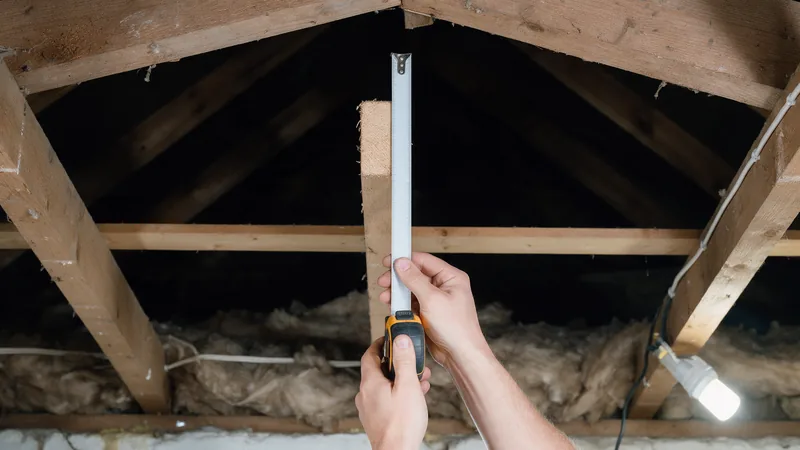
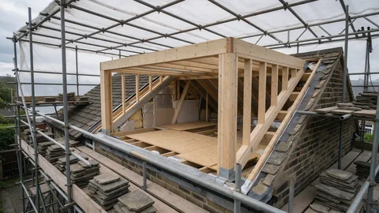

What you need
A tape measure, a torch and somebody to hold the ladder. Ten minutes. Do it before you ring anybody, because it turns a vague conversation into a short one.
Where to put the tape
Stand the end of the tape on the top of a ceiling joist, not on the plasterboard between them, because the plasterboard is not what the floor will sit on and it is not strong enough to stand on either. Run the tape straight up to the underside of the timber at the ridge, which is the beam the two slopes meet at.
Take that measurement in the middle of the loft, then again about a metre in from each end wall, and write the three numbers down. A roof is rarely the same all the way along, and on a house that has been extended it can change by a surprising amount.
Then measure the thing nobody measures
Here is the part that actually decides your loft, and it is not the height at the ridge at all. Hold the tape level, out from the ridge towards the eaves, and find the point where the ceiling has come down to about the height of your own head. That distance, out from the middle, is what tells you how wide your room is going to be.
Do it on both sides, because dormers, chimneys and hips all make it different one way to the other. Two lofts with identical ridge heights can give you a comfortable bedroom and a corridor, and the difference is entirely the pitch. The drawings below are the same thing in section.
Why we will not print a number here
You will find websites that give you a single figure and tell you that above it you are fine. We are not going to, and it is not coyness.
There are minimum dimensions in the building regulations and your building control officer will hold the job to them, particularly over the staircase. But the number that matters to you is not a threshold, it is the combination of the height, the pitch, the span of the roof, how much depth the insulation is going to take out of it and where the stairs can climb. A loft can measure well at the ridge and fail on the slope over the top step. A loft can measure tight and work beautifully because it is a steep roof with a short span.
So the honest answer is that we come and measure, and then we tell you, and if it is a no you get the no on the first visit rather than after a set of drawings.
While you are up there
Look at what is holding the roof up, because that is the second question and you can answer it in ten seconds. Slender timbers forming a W across the space, in every frame, means a trussed roof. Plain rafters on a couple of chunky beams running the length of the roof, with nothing crossing the middle, means a cut roof. Both convert. The first one needs more work before you get to the nice part.
And take a photograph from the hatch while you are there. It saves a lot of describing.
Written for a demo. This is general trade knowledge, not advice on your house. Raftergill Lofts is a fictional firm, so there is nobody to ring about it. The Clockwork number in the bar at the top is real.

Generated photoGenerated for this demo. Not a photograph of a real job.
In section
The same floor under two roofs.
Standing line at the same height in both, because it is the same person walking about. All that changes is the pitch.
Same floor · same standing line · shallower pitch
Height at the ridge is not the number that counts
Plenty of lofts measure well at the ridge and still give you a narrow strip of room with a sloping cupboard either side of it. The ceiling falls away from the ridge at the pitch of the roof, so on a shallow roof it runs out of height a short way out from the middle. That is the number that decides what you get, and it is the one nobody measures from the hatch.
Same floor · same standing line · steeper pitch
The same house, and nearly all of it is a room
Steeper pitch, same footprint, and the shaded part runs most of the way out to the eaves. The bit at each side that is too low never goes to waste either: it is where the wardrobes, the drawers and the eaves cupboards go, so the useful floor is wider again than the part you can stand up in.
In section
What is holding your roof up.
The ten second question you can answer from the hatch.
Newer houses · slender timbers · a W across the space
It is not a no, it is a bigger first stage
Most houses built from about the sixties on have a roof made of thin factory made trusses, and the W of struts inside each one crosses the space you want to stand in. They cannot simply be cut out: each one is carrying the roof and the ceiling at the same time. The job is to put a new floor and new support in first, so the roof is held a different way, and then the struts come out. More work at the start, and then exactly the same room at the end.
Older houses · purlins up the slopes · clear middle
The space is already there
Older roofs are cut on site: plain rafters sitting on a purlin or two that run the length of the roof and land on the gable walls. Nothing crosses the middle, so you can walk about in there the day you first put your head through the hatch. The floor still has to be built, because ceiling joists hold up a ceiling and nothing else, but the shape of the room is sat there waiting.
Questions
Asked about this.
Do I measure to the ridge timber or the plasterboard?
To the underside of the timber at the ridge, and from the top of a ceiling joist at the bottom. Those two surfaces are roughly what your finished room has to come out of, and everything that goes in afterwards comes off the number.
Insulation under the rafters takes some off the top, and the new floor deck takes some off the bottom. That is why a loft that measures just about fine on a bare tape can be tight once it is built, and why we take our own measurements and work the finished height out rather than quoting the raw one back at you.
What if I cannot get to the middle to measure?
Plenty of trussed lofts you cannot walk through at all, and measuring in there is awkward and not especially safe. Do what you can from the hatch, take photographs, and leave it at that.
Nobody should be crawling along ceiling joists in the dark with a tape to answer a question that a visit answers in five minutes. If it is awkward, say so when you ring.
Does the insulation depth really matter?
It takes real height out of the room and it is not optional, so yes. Insulating a roof slope properly means boards between the rafters and another layer under them, and that second layer is what stops every rafter reading as a cold stripe across your ceiling.
On a tight roof the answer is a better performing board rather than a thinner layer of a cheaper one, because the only thing you can buy back the height with is performance. It is a line on the quote worth understanding.
More
The other two.
 Generated photo
Generated photoDormer or rooflight: which conversion
The same loft drawn both ways, so you can see what the box on the back actually buys you and when leaving the roof alone is the better answer.

Generated photoPlanning and building regulations for lofts, in plain words
Two different things that people run together, and what each one is actually asking of your loft. Written in the order it happens rather than the order the forms come in.
Want somebody to measure it properly?
Tell us the house and your postcode. Half an hour with a tape answers what no article can.